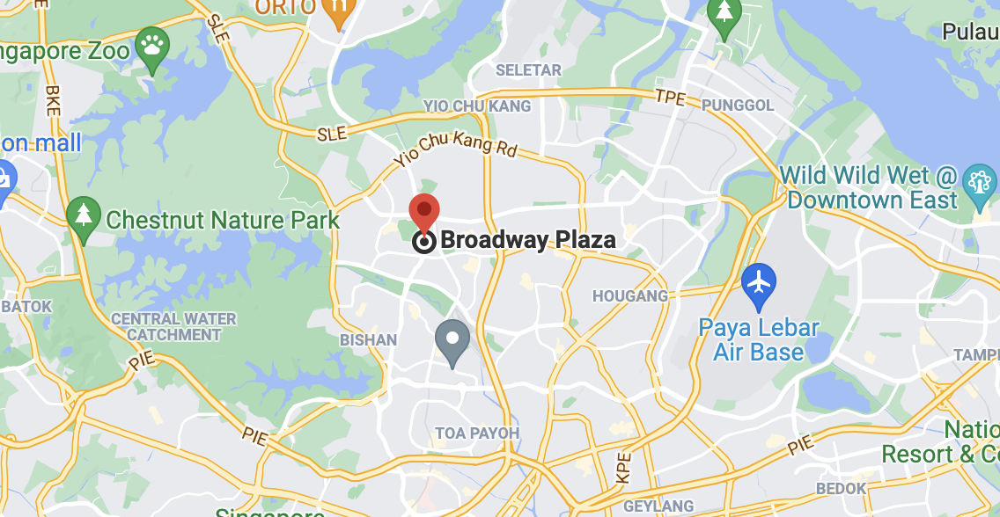

Why join us? Everyone is welcomed at Anytime Fitness Ang Mo Kio! No matter how much support you need, our friendly staff is always ready to help and assisst you on your fitness journey.
We have over 4000 gyms globally and are open 24/7 so what are you waiting for? Become a member now! Visit during staffed hours or drop us a call for an appointment.
Call us at 8388 5213 or leave us an email here.
You can also drop by during staffed hours as stated below:
We are located at Broadway Plaza, 4190 Ang Mo Kio Avenue 6 #01-02
Singapore, North East Singapore 569841.
For directions, click the map below.
